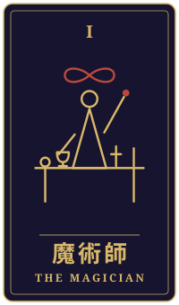

先客
物語の手前に、ひとつの相談がありました。三枚のタロットをめぐるやりとりを、聞こえたままに書き留めています。
持ち込まれた相談
夏の地震で、祖父の代からの理容店と家が半分傾きました。妻と娘は妻の実家に身を寄せ、私は店の奥で父と暮らしています。父は「この家で死ぬ」と言って避難所にも仮設にも行きません。年内に申し込めば、家を公費で解体してもらえます。壊して建て直せば、家族はまた一緒に暮らせるかもしれない。でも、父から店を奪うことになる気がして、申込書をもう二週間も鞄に入れたままです。毎朝、傾いた椅子に座って鏡を拭くと、少しだけ落ち着きます。本当は、私もこの店を壊したくないのかもしれません。父のためと言いながら、自分が決めるのが怖いだけなのか。私はどうすればいいのでしょうか。
タロットの読み解き

過去
魔術師・逆位置
魔術師の逆位置が過去に出ていますね。これは、思いや道具はそろっているのに、どこか空回りしていた時期があったことを示しているのかもしれません。店を守ろうとする気持ちは確かにあったはずですが、準備が追いつかないまま、ぎりぎりのところで踏ん張ってこられたのではないでしょうか。

現在
力・正位置
今は力のカードが正位置で出ています。このカードは、声を荒らげて引っ張る強さではなく、静かに気持ちを抱えたまま耐えていく強さを表すものです。毎朝、傾いた椅子に座って鏡を拭くというお話を伺いながら、その穏やかな習慣こそが、あなたが自分を支えている姿なのだと感じました。
壊すか残すかを決めることは、父の店を奪うことではなく、家族の時間をもう一度つなぐことかもしれません。

未来
隠者・正位置
隠者の正位置は、人の輪から少し離れて、自分の内側を静かに見つめる時間を意味します。申込書を鞄に入れたまま二週間過ぎたのは、迷いが深いからこそで、決して怠けではないのでしょう。この先は、父の思いや、店と自分の関係を、誰かに急かされず一人で見つめ直す時期になるかもしれません。
最後に
ここでお伝えしたいのは、「壊すべきか」を今すぐ答えにしなくてもいい、ということです。恐れを恥じる必要はありませんし、店を惜しむ気持ちも、父を思う気持ちも、どちらも本物なのでしょう。まずは父と、店をどうしたいか、そして何を残したいかを、ゆっくり言葉にしてみてはどうでしょう。解体や住まいの判断は、市の窓口や建築、福祉の専門の方とも一緒に、焦らず確かめながら進めてくださいね。
帰り際の問い騒がしさを離れて、自分は何を確かめたいのか。
読み解きは、タロット占い「月夜のアルカナ」が、この相談と引かれた三枚から返したものです。小説は同じ三枚を、別の角度から描いています。相談者は物語のための架空の人物です。相談文・読み解き・短編本文は、いずれも生成AIを使って制作しています。
物語に戻る